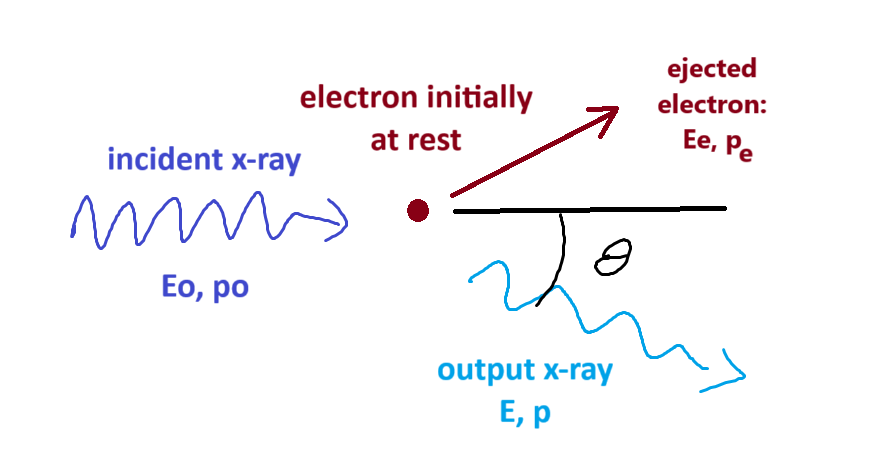

05-Introduction to Quantum Physics
![]()
Summary
Light shows many properties consistent with its nature as being a wave; examplees being difffraction and interference. But it also shows many properties that can only be explained by considering light as being a stream of particles, photons (\(\gamma\)). This conflict can be viewed as a wave-particle duality, with a photon as a probability wave.
Particles such as electrons also show similar effects.
The wave-like properties can be interpreted using Heisenberg’s Uncertainty Principle.
Contents
- Wave Nature of Light
- Particle Nature of Light
- Blackbody Radiation & Planck
- Photoelectric Effect
- Energy & Momentum of Photons
- Compton Effect
- Pair Production
- Mathematics of Wave Packets
- Uncertainty Principle
- Wave Nature of Particles
- Equations
- References
Wave Nature of Light
- optical diffraction explained by waves
- analogous to phenomena in water waves, sound, etc
- \(\theta \propto \frac{\lambda}{d}\), d is aperture width
- two-slit interference pattern (Young’s)
- \(n\lambda = d \times sin\theta\)
- X-ray diffraction patterns we looked at last week also explained by wave nature of light
But there are problems
Blackbody Radiation
- classical model of the spectrum of thermal radiation (Rayleigh-Jeans) gives infinities at short wavelengths
- called ultraviolet catastrophy
- solved by Planck’s Radiation Law
photoelectric effect
Compton Scattering
Pair production
1. Blackbody Radiation
- every object emits light because of its temperature
- hot bodies are brighter (Stefan Boltzman Law)
- hot bodies \(\implies\) more intense colours (Wien’s Displacement Law)
- \(infrared \rightarrow crimson \rightarrow yellow \rightarrow blue \rightarrow uv\)
- spectrum explained by Planck’s Radiation Law
\({\displaystyle u_{\lambda }(\lambda ,T)={\frac {8\pi hc}{\lambda ^{5}}}{\frac {1}{e^{hc/(\lambda k_{\mathrm {B} }T)}-1}}}\)
- introduces Plank’s constant, \(h = 6.626 \times 10^{-34} Js\)
- also \(\hbar = \frac{h}{2\pi} = 1.055 \times 10^{-34} Js\)
- h is the talisman for quantum physics
- where \(c = 2.99792458 \times 10^{8}m/s\) = speed of light
- \(k_B = 1.380649 \times 10^{-23} J/K\) = Boltzman’s Constant
Equations for Our Photons
- \(\omega = {2\pi}{f}\) = angular velocity
- \(k = \frac{2\pi}{\lambda}\) = wave vector
- \(E_{\gamma} = hf = \hbar \omega\)
- \(E_{\gamma} = \frac{hc}{\lambda} = \hbar c k\)
- \(p = \frac{h}{\lambda} = \hbar k\) = momentum
- also, photons are spin 1 particles \(\implies\) bosons
2. Photoelectric Effect
- shine light on metal plate
- electrons emitted
- would expect the brighter the light \(\implies\) the stronger the electric field \(\implies\) the more energetic the electrons leaving plate
- don’t see this
- energy of electrons depends on light wavelength
- number of electrons depends on brightness
- \(KE_{{max}_{e^-}} = hf - \phi\)
- adjust voltage until just strong enough to stop all electrons
- \(eV = hf - \phi\)
3. Compton Effect
if light is just a wave, scattering off particles won’t effect \(\lambda\)
but we do see change in \(\lambda\)
- have to look pretty carefully
- works best for x-rays scattering off electrons
get \(\Delta \lambda = \lambda - \lambda_0 = \frac{h}{mc}(1-cos \theta)\)

- energy before = energy after
\(mc^2 + E_o = E_e + E\) \(\implies E_e = E_0 + mc^2 - E\) \(\implies \sqrt{(mc^2)^2+ (p_ec)^2}\) \(= p_oc + mc^2 - pc\) \(\implies \sqrt{(mc)^2+ (p_e)^2}\) \(= p_o + mc - p\)
- conservation of momentum
\(\vec{p_0} = \vec{p} + \vec{p_e}\) \(\implies \vec{p_e} = \vec{p_0} - \vec{p}\) \(\implies p_e^2 = (\vec{p_0} - \vec{p})\cdot(\vec{p_0} - \vec{p})\) \(\implies p_e^2 = p_0^2 + p^2 - 2p_0 p\; cos\theta\)
- combining, replacing \(p_e^2\) from energy equation
\((mc)^2 + p_0^2 + p^2 - 2p p_0 cos \theta\) \(= p_0^2 + p^2 -2pp_0 + m^2c^2 + 2p_0mc - 2pmc\)
- lots of terms cancel
\(-2pp_0 cos \theta = -2p_0p + 2mc(p_0-p)\)
\(p_0p(1-cos\theta) = mc(p_0-p)\) \(\frac{1}{mc}(1-cos\theta) = \frac{1}{p}- \frac{1}{p_0}\)
Compton Shift is Pretty Small
- photons scattering off electrons at \(\theta = 80 ^{\circ}\)
- \(\Delta \lambda = \frac{h}{mc} (1 - cos\theta)\)
- \(= \frac{6.626 \times 10^{-34}}{9.11 \times 10^{-31} \;\times \; 3 \times 10^8}\; \times (1-cos 80^{\circ})\)
- \(= 2.426 \times 10^{-12} \; \times \; (1 - 0.1736)\)
- \(= 2.005 \times 10^{-12} m\)
- \(= 0.002005 \; nm\)
- gets worse if x-ray doesn’t liberate electron
- replace \(m = 9.11 \times 10^{-31} kg\) by mass of atom
4. Pair Production
Mathematics of Waves
- single wave \(A = A_0 sin(kx - \omega t)\)
- (neat way of expressing this \(A = e^{i(kx - \omega t)}\))
- solution to equation \(\frac{\partial^2A}{\partial x^2}-(\frac{k}{\omega})^2 \frac{\partial^2A}{\partial x^2} = 0\)
- angular velocity; \(\omega = 2 \pi f\), where f is the frequency
- wavenumber; \(k = \frac{2 \pi}{\lambda}\), where \(\lambda\) is the wavelength
- using \(v = f\lambda\) get \(v = \frac{\omega}{k}\)
- (this is the phase velocity, \(v_p\))
Add Two Waves of Slightly Different Frequency Together
\(A(x, t) = A_0 sin[(k-\Delta k)x - (\omega - \Delta \omega) t] +\) \(A_0 sin[(k+\Delta k)x - (\omega + \Delta \omega) t]\)
rearranging
\(A(x, t) = A_0 sin[(kx-\omega t) - (\Delta kx - \Delta \omega t)] +\) \(A_0 sin[(kx-\omega t) + (\Delta kx - \Delta \omega t)]\)
like adding two sines: \(sin(A+B) + sin(A-B) = 2sin(A)cos(B)\)
get: \(A(x, t) = 2 \times A_0 sin(kx - \omega t)\; cos(\Delta kx - \Delta \omega t)\)
a sine wave modulated by a much slower cosine wave
\(A(x, t) = 2 \times A_0 sin(kx - \omega t)\; cos(\Delta kx - \Delta \omega t)\)
The sine wave has velocity \(v_p = \omega / k\)
The longer cosine wave modulating it has velocity \(v_g = \Delta \omega / \Delta k\)
this last we call the Group Velocity
Example
Add the two waves \(A_0 sin(k_1x - \omega_1 t)\) and \(A_0 sin(k_2x - \omega_2 t)\) where \(k_1 = 6.4 \; rads/m\), \(\omega_1 = 9.2 \; rads/s\), \(k_2 = 6.0 \; rads/m\), and \(\omega_2 = 9.0 \; rads/s\)
the phase velocity is \(\omega / k\) where \(\omega = \frac{(\omega_1 + \omega_2)}{2}\) and \(k = \frac{(k_1 + k_2)}{2}\) giving \(v_p = 9.1 / 6.2 = 1.47 m/s\)
the group velocity is \(\Delta \omega / \Delta k\) where \(\Delta \omega = \frac{(\omega_1 - \omega_2)}{2}\) and \(\Delta k = \frac{(k_1 - k_2)}{2}\) giving \(v_g = 0.2 / 0.4 = 0.50 m/s\)
Adding More than Two Waves
the two wave example above gives the general principle, but in practice many more waves combine to form a wave packet
they’ll all have closely spaced frequencies (\(\frac{\omega}{2\pi}\))
and closely spaced wavenumbers, k
the average value for \(\omega\) and k will give the phase velocity
the way in which \(\omega\) and k change across the wavepacket, \(d \omega / dk\), will give the group velocity
the group velocity is of greater physical significance
Wavepacket of 500 Sine Waves

Credit: Institute of Sound and Vibration Research
Heisenberg’s Uncertainty Principle
- light diffraction can be though of as an illustration of the uncertainty principle
- slit width \(d\) so therefore uncertainty in photon position of \(\Delta x = d\)
- width of diffraction pattern = \(\Delta \theta = \frac{\lambda}{d}\)
- range of momentum values = \(\Delta p = p \Delta \theta = p \frac{\lambda}{d}\)
- but \(p = \frac{h}{\lambda}\)
- substituting we get \(\Delta p = \frac{h}{\lambda} \frac{\lambda}{d} = \frac{h}{d}\)
- but \(\Delta x = d\), so \(\Delta p = \frac{h}{\Delta x}\)
- \(\implies \Delta x \Delta p \ge h\)
Wave Nature of Other Stuff
electrons fired through a double slit apparatus also show a diffraction / interference pattern
- Davison Germer experiment with beam of electrons at nickel plate
- even when we dial the intensity way down, one electron at a time, we see the same pattern
- and this is also true for light, one photon at a time
Equations
- \(A = A_0 sin(kx - \omega t)\)
- \(A = e^{i(kx - \omega t)}\))
- \(\frac{\partial^2A}{\partial x^2}-(\frac{k}{\omega})^2 \frac{\partial^2A}{\partial x^2} = 0\)
- \(\omega = 2 \pi f\)
- \(k = \frac{2 \pi}{\lambda}\)
- \(v = \frac{\omega}{k}\)
- $p = = k $
- \(E = hf = \frac{hc}{\lambda}= \hbar c k\)
- \(v_p = \omega / k\)
- \(v_g = \partial \omega / \partial k\)
- \(\Delta \lambda = \frac{h}{mc} (1 - cos \theta)\)
References

Physics - Quantum